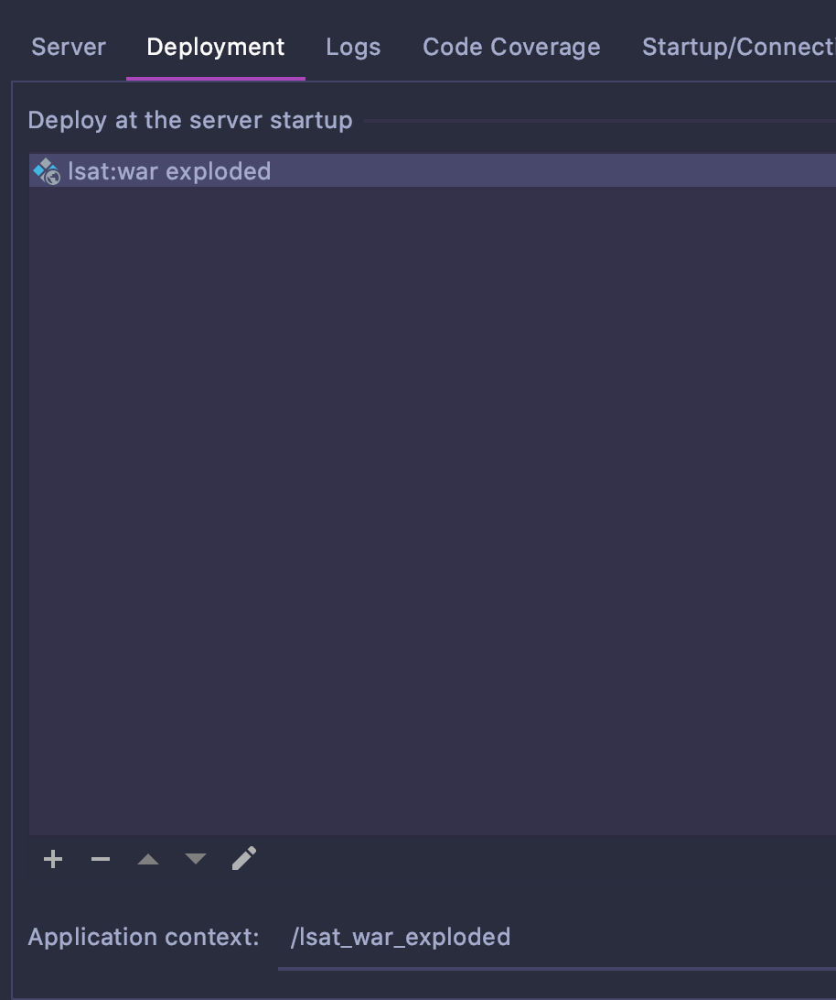
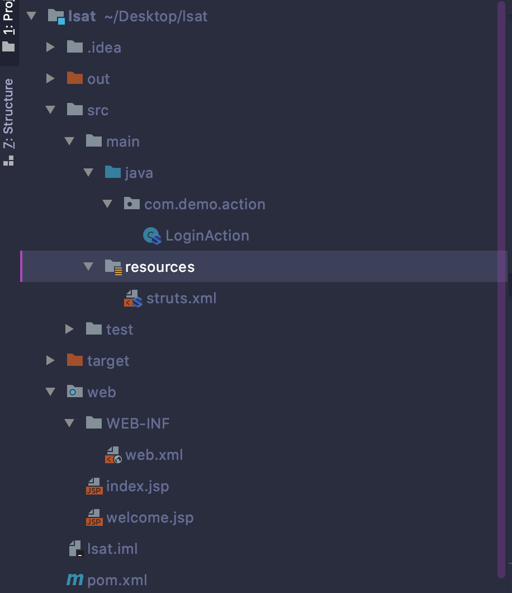
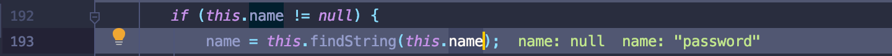
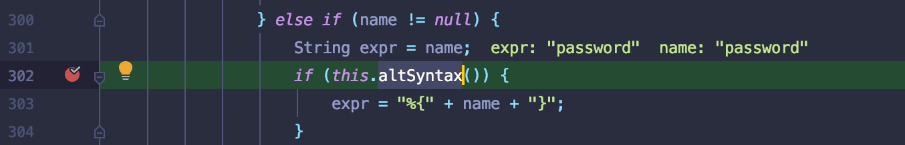
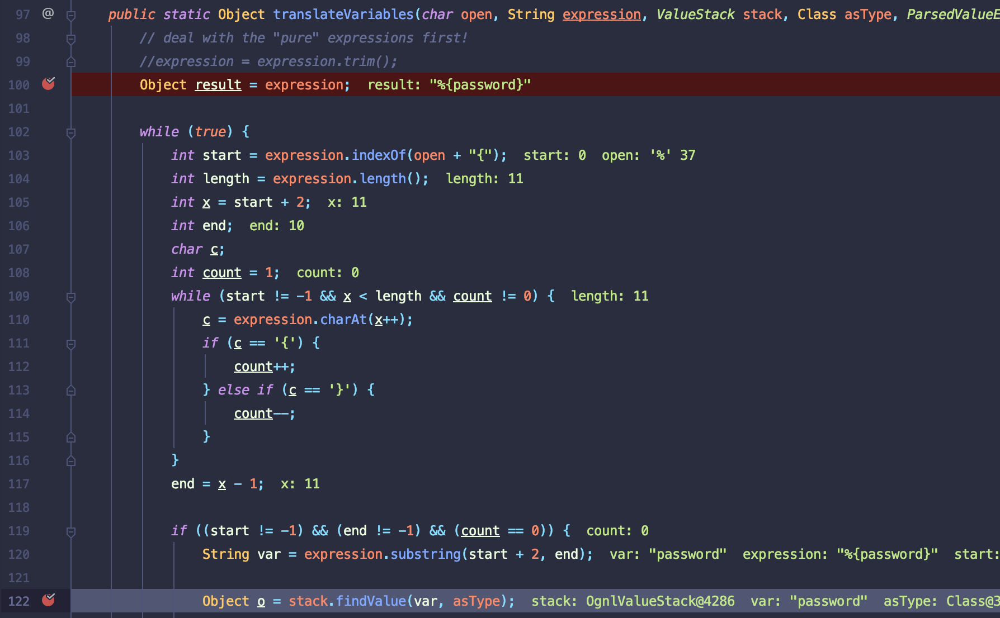
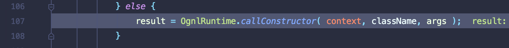

Struts2历史漏洞分析之s2-001
环境搭建
相关文件源码：https://xz.aliyun.com/t/2672
配置pom.xml
<dependency> <groupId>org.apache.struts</groupId> <artifactId>struts2-core</artifactId> <version>2.0.8</version> </dependency> </dependencies>
2.File->Artifacts 导入编译后的文件至WEB-INF目录，这步目的就是导入classes目录到web目录执行

3.tomcat配置local直接导入即可

4.目录

分析流程模版
- 相关servlet调用流程
- 数据流source
- 数据流sink
s2-001
漏洞原理分析
版本影响：2.0.1 ~ 2.0.8
表单字符串使用表达式解析导致注入
相关执行流程参照如下，减少不必要的debug
struts2执行流程：https://blog.csdn.net/snow_7/article/details/51513381
tomcat FIlter执行流程：https://zsr.github.io/2017/11/15/tomcat-filter%E5%88%86%E6%9E%90/
关注tomcat执行doFilter过滤器后调用struts过滤器
漏洞原理分析
source
在这个漏洞点，怎么确定source点，如果单纯以request对象来获取，是很冗杂的，用codeql时候会跑飞。因为框架存在很多对request对象包装.所以比较方便针对方法调用。如果能判断出哪个方法取出数据，就确定此为source点.
由UIBean中this.name赋值上,而该值从jsp文件中获取

在递归调用会先进行一次判断是否altSyntax是否开启，开启则对s标签进行解析，并对password赋予表达式格式.

sink
重新渲染JSP界面后会调用translateVariables函数，循环递归调用栈，当满足表达式要求执行findValue解析表达式，否则则执行
return XWorkConverter.getInstance().convertValue(stack.getContext(), result, asType);获取下一个栈.

当执行%{password}表达式直接跟进findValue函数，最后执行OgnlUtil.getValue方法解析表达式，造成命令执行.

具体实现调用callConstructor初始化调用构造器，执行后进行一次recycle再解析后续表达式字符.

漏洞修复
- 关闭altSyntax
- 取消递归调用，只解析第一层，内嵌表达式返回字符串
本博客所有文章除特别声明外，均采用 CC BY-SA 4.0 协议 ，转载请注明出处！